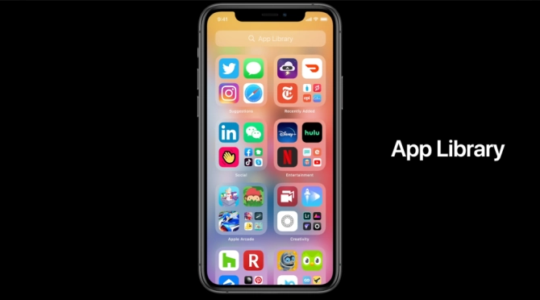

DNBC NEWS
DNBC NEWS
DNBC NEWS
LISTEN UP Your iPhone will now tell you if Facebook or any other app is SPYING on your microphone
Sean Keach, Digital Technology and Science Editor 24 Jun 2020, 9:32Updated: 24 Jun 2020, 12:46
IF you've ever panicked that an app might be listening through your iPhone's microphone, Apple has got you covered.
The next major iPhone update adds a new feature that alerts you whenever your microphone is activated.

That means if any app is surreptitiously recording you, you'll know about it.
It's all part of the new iOS 14 update, which will roll out to everyone in September.
Of course, you can bag the update early – find out how to install iOS 14.
In iOS 14, an orange dot will appear in the upper right corner of the screen when the microphone – or camera – is activated.
By swiping into your Control Centre, you'll be able to see details about which app is using the microphone.
If you suspect something is up, you should check the app's permissions in Settings.
You can deny specific apps access to your microphone or camera, for instance.
And if you're really worried, you could just delete the app altogether..
That's not the only privacy change coming to iOS 14.
For instance, you can now share a rough location with an app – rather than your exact details.
That means an app could show you nearby stores, for instance, without knowing exactly where you live.

Apple is changing your homescreen, so maybe it's time to clear out some old apps you don't need
Fears that apps are snooping on you have been around for years.
Many Facebook users say they've spoken about something out loud, only for related adverts to appear on the app soon after.
These users claim they've never searched for this sort of content before, and the only possible explanation is snooping.
Users reckon Facebook is using your phone's microphone to listen in on real-world conversations – to help target ads. But is it true?
Facebook has been very clear about the matter, and says it isn't using microphone recordings to target ads better.
"Facebook does not use your phone’s microphone to inform ads or to change what you see in News Feed," a company spokesperson said.
"Some recent articles have suggested that we must be listening to people’s conversations in order to show them relevant ads. This is not true.
"We show ads based on people’s interests and other profile information – not what you’re talking out loud about.
"We only access your microphone if you have given our app permission and if you are actively using a specific feature that requires audio.
"This might include recording a video or using an optional feature we introduced two years ago to include music or other audio in your status updates."
There's never been any solid evidence – beyond hearsay and anecdotes – that Facebook is recording your real-life conversations.
However, it's entirely possible that other rogue apps could listen in on what you're doing.
So Apple's new feature is the perfect defence for dodgy apps who play fast and loose with your privacy.


.jpg)